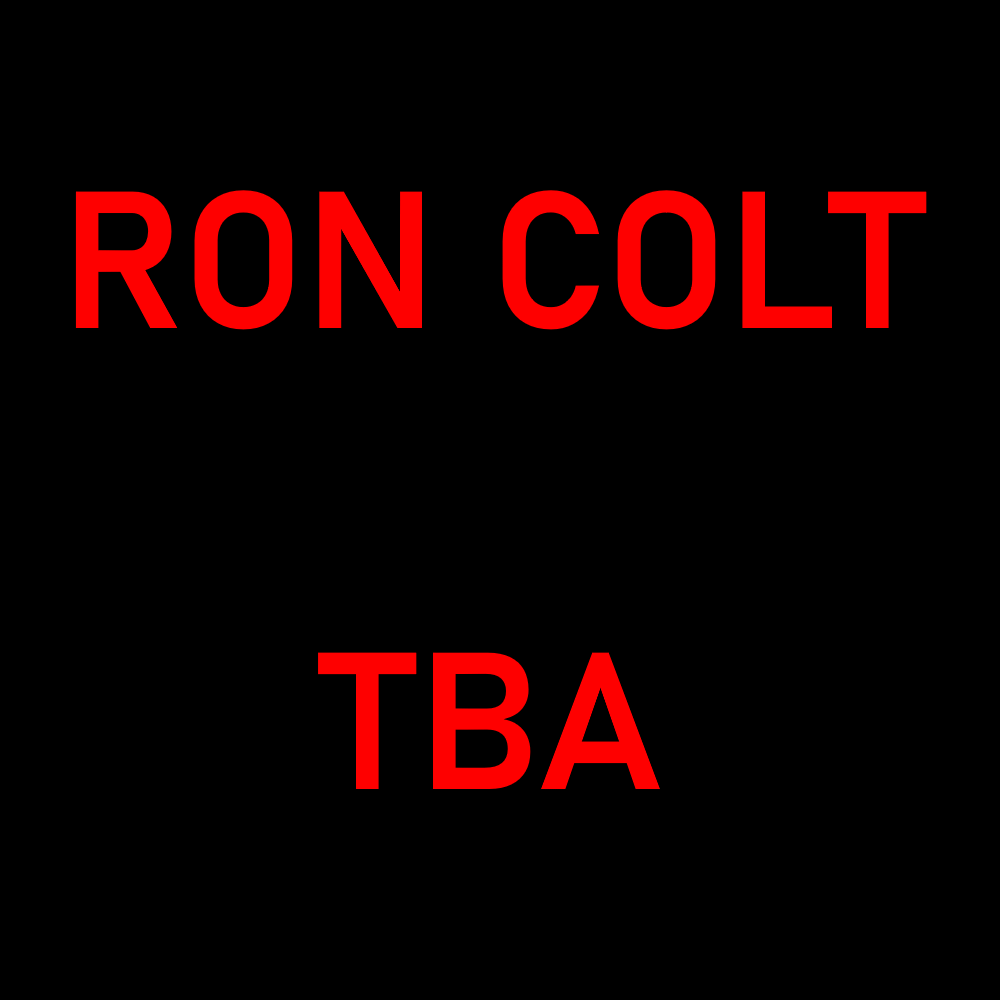
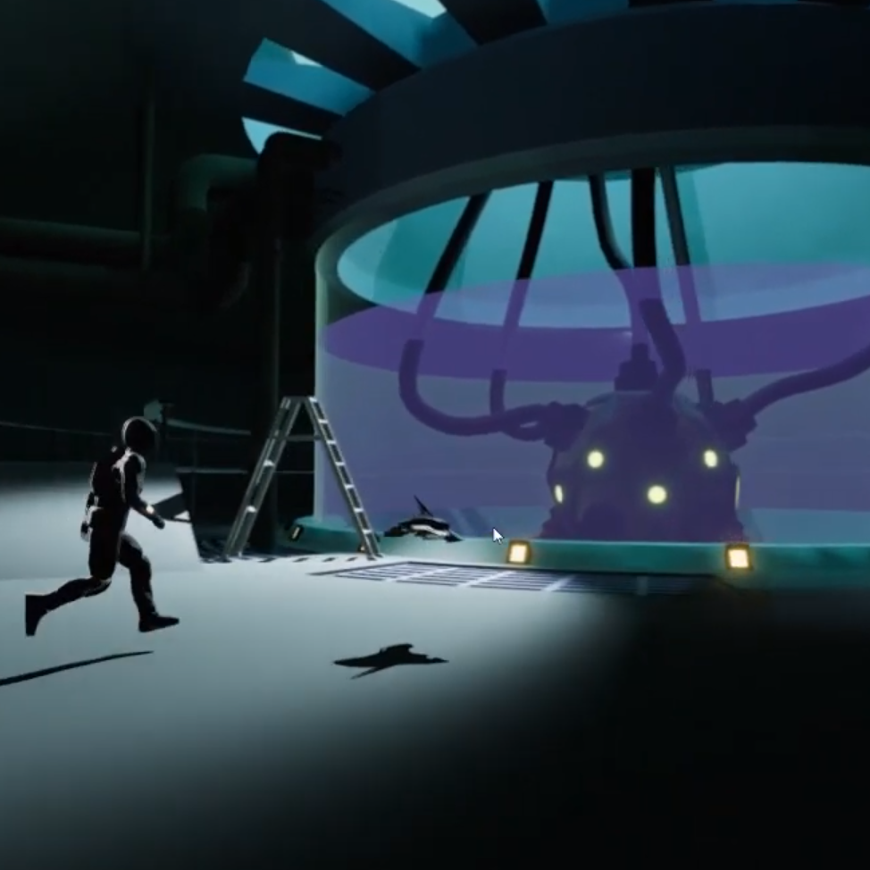
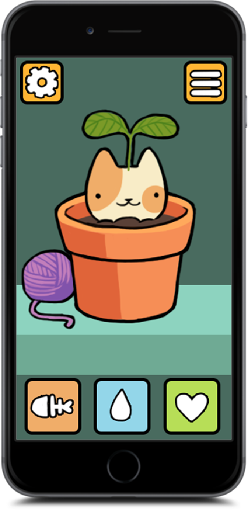
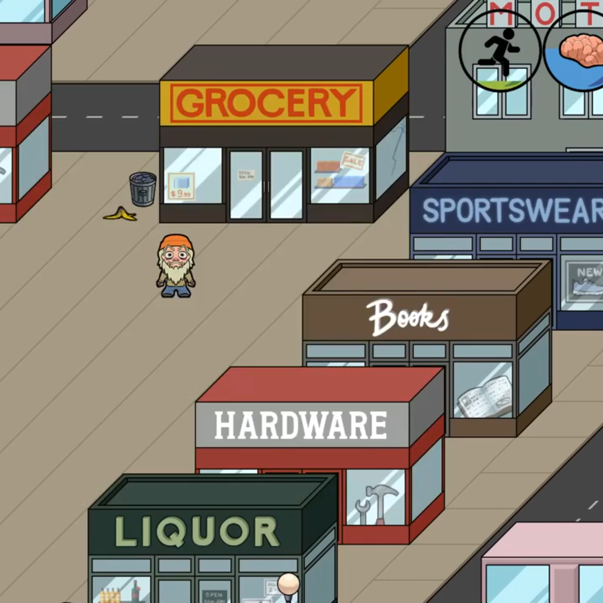
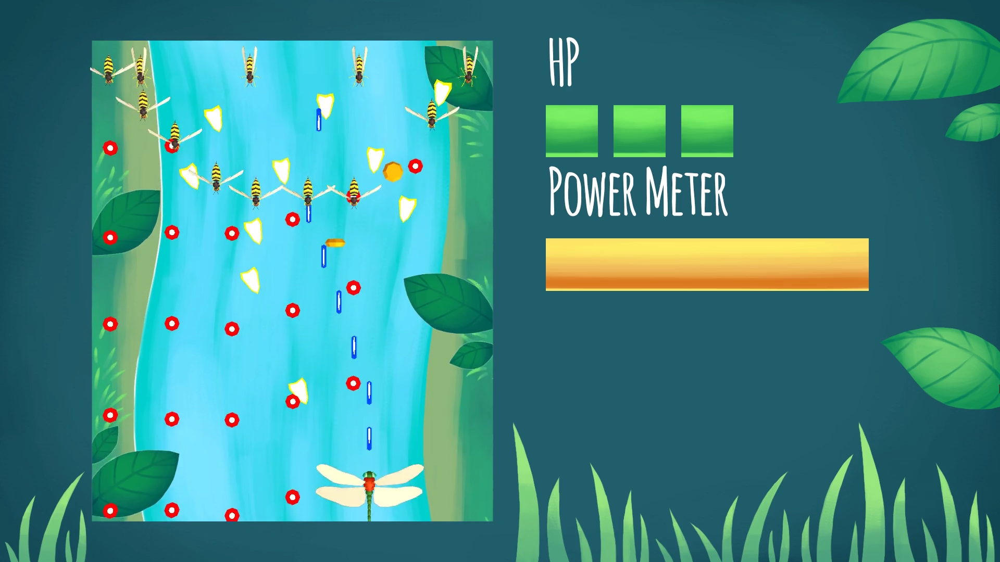

Take the leading role of action hero RON COLT in the bizarre stage play of the same name and kick the butts of your foes in the violent acts of the show collecting powerful artifacts for combining and bolstering your powers to cope with the ever-increasing difficulty of the play chapters twisted by the gameplay modifiers.
In this project I worked as a programmer and I was responsible for the moment to moment player mechanics and loot system.
Unfortunately this project did not meet it's production goal and was never released.

In Selene you crash-land on the surface of the moon, only to find an abandoned moon base. You set out to find out what happened. It was an experiment on developing a narratively driven game where the main goals were meaningful exploration, environmental storytelling and light puzzle elements.
I worked as a full time sound designer on this project, making sound effects, composing music and implementing it all. The project did not meet it's goal and we cut a lot of stuff along the way. This was our very first narratively driven game as well. I'm still happy with what we accomplished but there definitely was things we could have improved on the communication side of things.

This project was a school project where the use of a C++ engine and making a mobile game was required. The C++ basics course was just beginning on the side of this game project and not many had any good experience on C++ programming or engines. We chose Unreal Engine 4 for our game project that was going to be a idle manager where you grow and take care of adorable cat plant creatures. I decided against on choosing a framework like SDL2 because I wanted the engine be accessible to all team members. Unfortunately this project never got off the ground as we had road block after another trying to learn Unreal's C++ scripting. We gave up on that and started to use blueprints for the project. Unfortunately it was too late in to the projects life span to start using blueprints. So the project was sort of "doomed". We passed the project course though and learned a lot of lessons on the way.

HOBO-Ops was my second school project where the goal was to make a 'hobo survival simulator' in a cavalier perspective. The project mostly met it's goal, my personal failure was spending too much time on a creating a custom A-star pathfinding that could have been done with other ready solutions.

Super Bug Shmup was my first school project and we had one day per the week for this project. My goal was to make a simple game and guide my not so experienced teammates to the exciting world of Unity scripting. The project came out quite good for a first project with a completely new team. I already knew quite a lot about Unity scripting from my previous education. It was a fun ride, and everyone enjoyed the project.